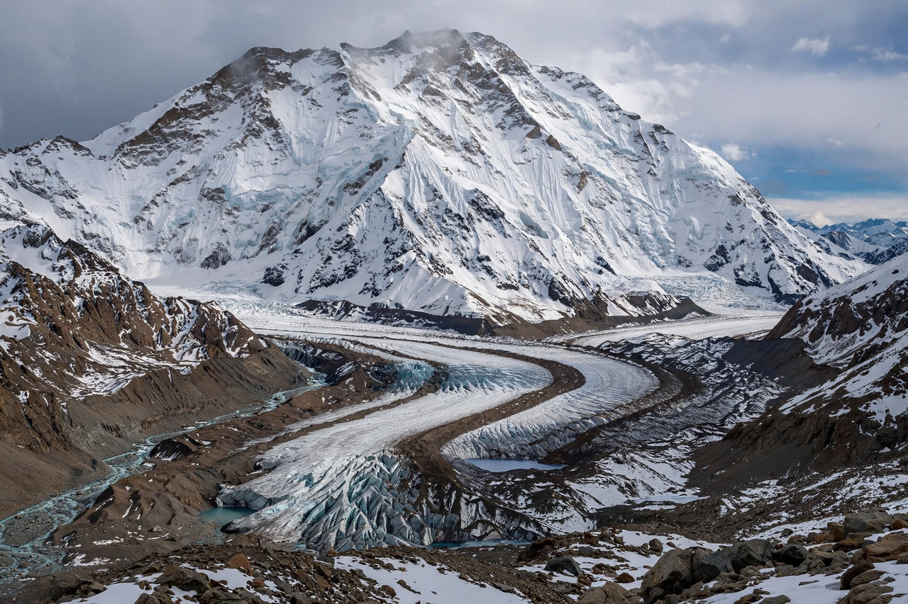

| Jengish Chokusu | |
 Jengish Chokusu from the South Inylchek Glacier | |
| Elevation | 7,439 m (24,406 ft) |
|---|---|
| Location | Kyrgyzstan–China border (Xinjiang) |
| Range | Kakshaal Too, Tian Shan |
| First ascent | 1956, Soviet expedition led by Vitaly Abalakov |
Jengish Chokusu (Kyrgyz for "Victory Peak"; Russian: Pik Pobedy) is the highest mountain in the Tian Shan mountain system, at 7,439 metres (24,406 ft) above sea level. It lies on the border between Kyrgyzstan and the Xinjiang region of China, in the Kakshaal Too range, south of Lake Issyk-Kul, and is the northernmost 7,000-metre peak in the world.
The mountain is a long massif with several summits along a ridge of about 10 km, rising above the South Inylchek Glacier, one of the largest glaciers outside the polar regions. Its main summit was long mismeasured; a 1940s survey fixed the height at 7,439 m, surpassing neighbouring Khan Tengri (7,010 m) once glacial ice was discounted. In Chinese it is called Tuomuer Peak (托木尔峰).
The peak was identified during Soviet surveys in 1938 (and at first mistaken for Khan Tengri). The first ascent was made in 1956 by a Soviet team under Vitaly Abalakov. Jengish Chokusu is considered the most difficult and dangerous of the five 7,000-metre peaks of the former Soviet Union that make up the "Snow Leopard" challenge: its weather is severe, its routes long and exposed, and avalanches have caused many fatalities, including a major disaster in 1955 that killed most of an Uzbek–Kazakh expedition. Approaches are usually from the Kyrgyz side via the South Inylchek Glacier and the Zvyozdochka Glacier to camps on the west ridge.